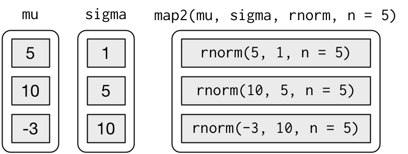

29 Iteration
29.1 Introduction
In Chapter 27, we talked about how important it is to reduce duplication in your code by creating functions instead of copying-and-pasting. Reducing code duplication has three main benefits:
It’s easier to see the intent of your code, because your eyes are drawn to what’s different, not what stays the same.
It’s easier to respond to changes in requirements. As your needs change, you only need to make changes in one place, rather than remembering to change every place that you copied-and-pasted the code.
You’re likely to have fewer bugs because each line of code is used in more places.
One tool for reducing duplication is functions, which reduce duplication by identifying repeated patterns of code and extract them out into independent pieces that can be easily reused and updated. Another tool for reducing duplication is iteration, which helps you when you need to do the same thing to multiple inputs: repeating the same operation on different columns, or on different datasets. In this chapter you’ll learn about two important iteration paradigms: imperative programming and functional programming. On the imperative side you have tools like for loops and while loops, which are a great place to start because they make iteration very explicit, so it’s obvious what’s happening. However, for loops are quite verbose, and require quite a bit of bookkeeping code that is duplicated for every for loop. Functional programming (FP) offers tools to extract out this duplicated code, so each common for loop pattern gets its own function. Once you master the vocabulary of FP, you can solve many common iteration problems with less code, more ease, and fewer errors.
29.1.1 Prerequisites
Once you’ve mastered the for loops provided by base R, you’ll learn some of the powerful programming tools provided by purrr, one of the tidyverse core packages.
29.2 For loops
Imagine we have this simple tibble:
We want to compute the median of each column. You could do with copy-and-paste:
But that breaks our rule of thumb: never copy and paste more than twice. Instead, we could use a for loop:
Every for loop has three components:
-
The output:
output <- vector("double", length(x)). Before you start the loop, you must always allocate sufficient space for the output. This is very important for efficiency: if you grow the for loop at each iteration usingc()(for example), your for loop will be very slow.A general way of creating an empty vector of given length is the
vector()function. It has two arguments: the type of the vector (“logical”, “integer”, “double”, “character”, etc) and the length of the vector. -
The sequence:
i in seq_along(df). This determines what to loop over: each run of the for loop will assignito a different value fromseq_along(df). It’s useful to think ofias a pronoun, like “it”.You might not have seen
seq_along()before. It’s a safe version of the familiar1:length(l), with an important difference: if you have a zero-length vector,seq_along()does the right thing:You probably won’t create a zero-length vector deliberately, but it’s easy to create them accidentally. If you use
1:length(x)instead ofseq_along(x), you’re likely to get a confusing error message. The body:
output[[i]] <- median(df[[i]]). This is the code that does the work. It’s run repeatedly, each time with a different value fori. The first iteration will runoutput[[1]] <- median(df[[1]]), the second will runoutput[[2]] <- median(df[[2]]), and so on.
That’s all there is to the for loop! Now is a good time to practice creating some basic (and not so basic) for loops using the exercises below. Then we’ll move on to some variations of the for loop that help you solve other problems that will crop up in practice.
29.2.1 Exercises
-
Write for loops to:
- Compute the mean of every column in
mtcars. - Determine the type of each column in
nycflights13::flights. - Compute the number of unique values in each column of
palmerpenguins::penguins. - Generate 10 random normals from distributions with means of -10, 0, 10, and 100.
Think about the output, sequence, and body before you start writing the loop.
- Compute the mean of every column in
-
Eliminate the for loop in each of the following examples by taking advantage of an existing function that works with vectors:
out <- "" for (x in letters) { out <- stringr::str_c(out, x) } x <- sample(100) sd <- 0 for (i in seq_along(x)) { sd <- sd + (x[i] - mean(x)) ^ 2 } sd <- sqrt(sd / (length(x) - 1)) x <- runif(100) out <- vector("numeric", length(x)) out[1] <- x[1] for (i in 2:length(x)) { out[i] <- out[i - 1] + x[i] } -
Combine your function writing and for loop skills:
- Write a for loop that
prints()the lyrics to the children’s song “Alice the camel”. - Convert the nursery rhyme “ten in the bed” to a function. Generalise it to any number of people in any sleeping structure.
- Convert the song “99 bottles of beer on the wall” to a function. Generalise to any number of any vessel containing any liquid on any surface.
- Write a for loop that
-
It’s common to see for loops that don’t preallocate the output and instead increase the length of a vector at each step:
How does this affect performance? Design and execute an experiment.
29.3 For loop variations
Once you have the basic for loop under your belt, there are some variations that you should be aware of. These variations are important regardless of how you do iteration, so don’t forget about them once you’ve mastered the FP techniques you’ll learn about in the next section.
There are four variations on the basic theme of the for loop:
- Modifying an existing object, instead of creating a new object.
- Looping over names or values, instead of indices.
- Handling outputs of unknown length.
- Handling sequences of unknown length.
29.3.1 Modifying an existing object
Sometimes you want to use a for loop to modify an existing object. For example, remember our challenge from Chapter 27 on functions. We wanted to rescale every column in a data frame:
To solve this with a for loop we again think about the three components:
Output: we already have the output — it’s the same as the input!
Sequence: we can think about a data frame as a list of columns, so we can iterate over each column with
seq_along(df).Body: apply
rescale01().
This gives us:
for (i in seq_along(df)) {
df[[i]] <- rescale01(df[[i]])
}Typically you’ll be modifying a list or data frame with this sort of loop, so remember to use [[, not [. You might have spotted that we used [[ in all my for loops: we think it’s better to use [[ even for atomic vectors because it makes it clear that you want to work with a single element.
29.3.2 Looping patterns
There are three basic ways to loop over a vector. So far we’ve shown you the most general: looping over the numeric indices with for (i in seq_along(xs)), and extracting the value with x[[i]]. There are two other forms:
Loop over the elements:
for (x in xs). This is most useful if you only care about side-effects, like plotting or saving a file, because it’s difficult to save the output efficiently.-
Loop over the names:
for (nm in names(xs)). This gives you a name, which you can use to access the value withx[[nm]]. This is useful if you want to use the name in a plot title or a file name. If you’re creating named output, make sure to name the results vector like so:
Iteration over the numeric indices is the most general form, because given the position you can extract both the name and the value:
29.3.3 Unknown output length
Sometimes you might not know how long the output will be. For example, imagine you want to simulate some random vectors of random lengths. You might be tempted to solve this problem by progressively growing the vector:
But this is not very efficient because in each iteration, R has to copy all the data from the previous iterations. In technical terms you get “quadratic” (\(O(n^2)\)) behaviour which means that a loop with three times as many elements would take nine (\(3^2\)) times as long to run.
A better solution to save the results in a list, and then combine into a single vector after the loop is done:
out <- vector("list", length(means))
for (i in seq_along(means)) {
n <- sample(100, 1)
out[[i]] <- rnorm(n, means[[i]])
}
str(out)
#> List of 3
#> $ : num [1:76] -0.3389 -0.0756 0.0402 0.1243 -0.9984 ...
#> $ : num [1:17] -0.11 1.149 0.614 0.77 1.392 ...
#> $ : num [1:41] 1.88 2.46 2.62 1.82 1.88 ...
str(unlist(out))
#> num [1:134] -0.3389 -0.0756 0.0402 0.1243 -0.9984 ...Here we’ve used unlist() to flatten a list of vectors into a single vector. A stricter option is to use purrr::flatten_dbl() — it will throw an error if the input isn’t a list of doubles.
This pattern occurs in other places too:
You might be generating a long string. Instead of
paste()ing together each iteration with the previous, save the output in a character vector and then combine that vector into a single string withpaste(output, collapse = "").You might be generating a big data frame. Instead of sequentially
rbind()ing in each iteration, save the output in a list, then usedplyr::bind_rows(output)to combine the output into a single data frame.
Watch out for this pattern. Whenever you see it, switch to a more complex result object, and then combine in one step at the end.
29.3.4 Unknown sequence length
Sometimes you don’t even know how long the input sequence should run for. This is common when doing simulations. For example, you might want to loop until you get three heads in a row. You can’t do that sort of iteration with the for loop. Instead, you can use a while loop. A while loop is simpler than a for loop because it only has two components, a condition and a body:
while (condition) {
# body
}A while loop is also more general than a for loop, because you can rewrite any for loop as a while loop, but you can’t rewrite every while loop as a for loop:
Here’s how we could use a while loop to find how many tries it takes to get three heads in a row:
I mention while loops only briefly, because we hardly ever use them. They’re most often used for simulation, which is outside the scope of this book. However, it is good to know they exist so that you’re prepared for problems where the number of iterations is not known in advance.
29.3.5 Exercises
Imagine you have a directory full of CSV files that you want to read in. You have their paths in a vector,
files <- dir("data/", pattern = "\\.csv$", full.names = TRUE), and now want to read each one withread_csv(). Write the for loop that will load them into a single data frame.What happens if you use
for (nm in names(x))andxhas no names? What if only some of the elements are named? What if the names are not unique?-
Write a function that prints the mean of each numeric column in a data frame, along with its name. For example,
show_mean(mpg)would print:show_mean(mpg) #> displ: 3.47 #> year: 2004 #> cyl: 5.89 #> cty: 16.86(Extra challenge: what function did we use to make sure that the numbers lined up nicely, even though the variable names had different lengths?)
-
What does this code do? How does it work?
29.4 For loops vs. functionals
For loops are not as important in R as they are in other languages because R is a functional programming language. This means that it’s possible to wrap up for loops in a function, and call that function instead of using the for loop directly.
To see why this is important, consider (again) this simple data frame:
Imagine you want to compute the mean of every column. You could do that with a for loop:
You realise that you’re going to want to compute the means of every column pretty frequently, so you extract it out into a function:
But then you think it’d also be helpful to be able to compute the median, and the standard deviation, so you copy and paste your col_mean() function and replace the mean() with median() and sd():
Uh oh! You’ve copied-and-pasted this code twice, so it’s time to think about how to generalise it. Notice that most of this code is for-loop boilerplate and it’s hard to see the one thing (mean(), median(), sd()) that is different between the functions.
What would you do if you saw a set of functions like this:
Hopefully, you’d notice that there’s a lot of duplication, and extract it out into an additional argument:
You’ve reduced the chance of bugs (because you now have 1/3 of the original code), and made it easy to generalise to new situations.
We can do exactly the same thing with col_mean(), col_median() and col_sd() by adding an argument that supplies the function to apply to each column:
The idea of passing a function to another function is an extremely powerful idea, and it’s one of the behaviours that makes R a functional programming language. It might take you a while to wrap your head around the idea, but it’s worth the investment. In the rest of the chapter, you’ll learn about and use the purrr package, which provides functions that eliminate the need for many common for loops. The apply family of functions in base R (apply(), lapply(), tapply(), etc) solve a similar problem, but purrr is more consistent and thus is easier to learn.
The goal of using purrr functions instead of for loops is to allow you to break common list manipulation challenges into independent pieces:
How can you solve the problem for a single element of the list? Once you’ve solved that problem, purrr takes care of generalising your solution to every element in the list.
If you’re solving a complex problem, how can you break it down into bite-sized pieces that allow you to advance one small step towards a solution? With purrr, you get lots of small pieces that you can compose together with the pipe.
This structure makes it easier to solve new problems. It also makes it easier to understand your solutions to old problems when you re-read your old code.
29.4.1 Exercises
Read the documentation for
apply(). In the 2d case, what two for loops does it generalise?Adapt
col_summary()so that it only applies to numeric columns You might want to start with anis_numeric()function that returns a logical vector that has aTRUEcorresponding to each numeric column.
29.5 The map functions
The pattern of looping over a vector, doing something to each element and saving the results is so common that the purrr package provides a family of functions to do it for you. There is one function for each type of output:
-
map()makes a list. -
map_lgl()makes a logical vector. -
map_int()makes an integer vector. -
map_dbl()makes a double vector. -
map_chr()makes a character vector.
Each function takes a vector as input, applies a function to each piece, and then returns a new vector that’s the same length (and has the same names) as the input. The type of the vector is determined by the suffix to the map function.
Once you master these functions, you’ll find it takes much less time to solve iteration problems. But you should never feel bad about using a for loop instead of a map function. The map functions are a step up a tower of abstraction, and it can take a long time to get your head around how they work. The important thing is that you solve the problem that you’re working on, not write the most concise and elegant code (although that’s definitely something you want to strive towards!).
Some people will tell you to avoid for loops because they are slow. They’re wrong! (Well at least they’re rather out of date, as for loops haven’t been slow for many years.) The chief benefits of using functions like map() is not speed, but clarity: they make your code easier to write and to read.
We can use these functions to perform the same computations as the last for loop. Those summary functions returned doubles, so we need to use map_dbl():
Compared to using a for loop, focus is on the operation being performed (i.e. mean(), median(), sd()), not the bookkeeping required to loop over every element and store the output. This is even more apparent if we use the pipe:
There are a few differences between map_*() and col_summary():
All purrr functions are implemented in C. This makes them a little faster at the expense of readability.
The second argument,
.f, the function to apply, can be a formula, a character vector, or an integer vector. You’ll learn about those handy shortcuts in the next section.-
map_*()uses … ([dot dot dot]) to pass along additional arguments to.feach time it’s called:map_dbl(df, mean, trim = 0.5) #> a b c d #> -0.51850298 0.02779864 0.17295591 -0.61163819 -
The map functions also preserve names:
29.5.1 Shortcuts
There are a few shortcuts that you can use with .f in order to save a little typing. Imagine you want to fit a linear model to each group in a dataset. The following toy example splits up the mtcars dataset into three pieces (one for each value of cylinder) and fits the same linear model to each piece:
The syntax for creating an anonymous function in R is quite verbose so purrr provides a convenient shortcut: a one-sided formula.
Here we’ve used .x as a pronoun: it refers to the current list element (in the same way that i referred to the current index in the for loop). .x in a one-sided formula corresponds to an argument in an anonymous function.
When you’re looking at many models, you might want to extract a summary statistic like the \(R^2\). To do that we need to first run summary() and then extract the component called r.squared. We could do that using the shorthand for anonymous functions:
But extracting named components is a common operation, so purrr provides an even shorter shortcut: you can use a string.
You can also use an integer to select elements by position:
29.5.2 Base R
If you’re familiar with the apply family of functions in base R, you might have noticed some similarities with the purrr functions:
lapply()is basically identical tomap(), except thatmap()is consistent with all the other functions in purrr, and you can use the shortcuts for.f.-
Base
sapply()is a wrapper aroundlapply()that automatically simplifies the output. This is useful for interactive work but is problematic in a function because you never know what sort of output you’ll get:x1 <- list( c(0.27, 0.37, 0.57, 0.91, 0.20), c(0.90, 0.94, 0.66, 0.63, 0.06), c(0.21, 0.18, 0.69, 0.38, 0.77) ) x2 <- list( c(0.50, 0.72, 0.99, 0.38, 0.78), c(0.93, 0.21, 0.65, 0.13, 0.27), c(0.39, 0.01, 0.38, 0.87, 0.34) ) threshold <- function(x, cutoff = 0.8) x[x > cutoff] x1 |> sapply(threshold) |> str() #> List of 3 #> $ : num 0.91 #> $ : num [1:2] 0.9 0.94 #> $ : num(0) x2 |> sapply(threshold) |> str() #> num [1:3] 0.99 0.93 0.87 vapply()is a safe alternative tosapply()because you supply an additional argument that defines the type. The only problem withvapply()is that it’s a lot of typing:vapply(df, is.numeric, logical(1))is equivalent tomap_lgl(df, is.numeric). One advantage ofvapply()over purrr’s map functions is that it can also produce matrices — the map functions only ever produce vectors.
We focus on purrr functions here because they have more consistent names and arguments, helpful shortcuts, and in the future will provide easy parallelism and progress bars.
29.5.3 Exercises
-
Write code that uses one of the map functions to:
- Compute the mean of every column in
mtcars. - Determine the type of each column in
nycflights13::flights. - Compute the number of unique values in each column of
palmerpenguins::penguins. - Generate 10 random normals from distributions with means of -10, 0, 10, and 100.
- Compute the mean of every column in
How can you create a single vector that for each column in a data frame indicates whether or not it’s a factor?
What happens when you use the map functions on vectors that aren’t lists? What does
map(1:5, runif)do? Why?What does
map(-2:2, rnorm, n = 5)do? Why? What doesmap_dbl(-2:2, rnorm, n = 5)do? Why?Rewrite
map(x, function(df) lm(mpg ~ wt, data = df))to eliminate the anonymous function.
29.6 Dealing with failure
When you use the map functions to repeat many operations, the chances are much higher that one of those operations will fail. When this happens, you’ll get an error message, and no output. This is annoying: why does one failure prevent you from accessing all the other successes? How do you ensure that one bad apple doesn’t ruin the whole barrel?
In this section you’ll learn how to deal with this situation with a new function: safely(). safely() is an adverb: it takes a function (a verb) and returns a modified version. In this case, the modified function will never throw an error. Instead, it always returns a list with two elements:
resultis the original result. If there was an error, this will beNULL.erroris an error object. If the operation was successful, this will beNULL.
(You might be familiar with the try() function in base R. It’s similar, but because it sometimes returns the original result and it sometimes returns an error object it’s more difficult to work with.)
Let’s illustrate this with a simple example: log():
safe_log <- safely(log)
str(safe_log(10))
#> List of 2
#> $ result: num 2.3
#> $ error : NULL
str(safe_log("a"))
#> List of 2
#> $ result: NULL
#> $ error :List of 2
#> ..$ message: chr "non-numeric argument to mathematical function"
#> ..$ call : language .Primitive("log")(x, base)
#> ..- attr(*, "class")= chr [1:3] "simpleError" "error" "condition"When the function succeeds, the result element contains the result and the error element is NULL. When the function fails, the result element is NULL and the error element contains an error object.
safely() is designed to work with map:
x <- list(1, 10, "a")
y <- x |> map(safely(log))
str(y)
#> List of 3
#> $ :List of 2
#> ..$ result: num 0
#> ..$ error : NULL
#> $ :List of 2
#> ..$ result: num 2.3
#> ..$ error : NULL
#> $ :List of 2
#> ..$ result: NULL
#> ..$ error :List of 2
#> .. ..$ message: chr "non-numeric argument to mathematical function"
#> .. ..$ call : language .Primitive("log")(x, base)
#> .. ..- attr(*, "class")= chr [1:3] "simpleError" "error" "condition"This would be easier to work with if we had two lists: one of all the errors and one of all the output. That’s easy to get with purrr::transpose():
y <- y |> transpose()
str(y)
#> List of 2
#> $ result:List of 3
#> ..$ : num 0
#> ..$ : num 2.3
#> ..$ : NULL
#> $ error :List of 3
#> ..$ : NULL
#> ..$ : NULL
#> ..$ :List of 2
#> .. ..$ message: chr "non-numeric argument to mathematical function"
#> .. ..$ call : language .Primitive("log")(x, base)
#> .. ..- attr(*, "class")= chr [1:3] "simpleError" "error" "condition"It’s up to you how to deal with the errors, but typically you’ll either look at the values of x where y is an error, or work with the values of y that are ok:
is_ok <- y$error |> map_lgl(is_null)
x[!is_ok]
#> [[1]]
#> [1] "a"
y$result[is_ok] |> flatten_dbl()
#> [1] 0.000000 2.302585Purrr provides two other useful adverbs:
-
Like
safely(),possibly()always succeeds. It’s simpler thansafely(), because you give it a default value to return when there is an error. -
quietly()performs a similar role tosafely(), but instead of capturing errors, it captures printed output, messages, and warnings:
29.7 Mapping over multiple arguments
So far we’ve mapped along a single input. But often you have multiple related inputs that you need to iterate along in parallel. That’s the job of the map2() and pmap() functions. For example, imagine you want to simulate some random normals with different means. You know how to do that with map():
What if you also want to vary the standard deviation? One way to do that would be to iterate over the indices and index into vectors of means and sds:
But that obfuscates the intent of the code. Instead we could use map2() which iterates over two vectors in parallel:
map2() generates this series of function calls:

Note that the arguments that vary for each call come before the function; arguments that are the same for every call come after.
Like map(), map2() is just a wrapper around a for loop:
You could also imagine map3(), map4(), map5(), map6() etc, but that would get tedious quickly. Instead, purrr provides pmap() which takes a list of arguments. You might use that if you wanted to vary the mean, standard deviation, and number of samples:
That looks like:

If you don’t name the list’s elements, pmap() will use positional matching when calling the function. That’s a little fragile, and makes the code harder to read, so it’s better to name the arguments:
That generates longer, but safer, calls:

Since the arguments are all the same length, it makes sense to store them in a data frame:
As soon as your code gets complicated, we think a data frame is a good approach because it ensures that each column has a name and is the same length as all the other columns.
29.7.1 Invoking different functions
There’s one more step up in complexity - as well as varying the arguments to the function you might also vary the function itself:
To handle this case, you can use invoke_map():
invoke_map(f, param, n = 5) |> str()
#> List of 3
#> $ : num [1:5] 0.479 0.439 -0.471 0.348 -0.581
#> $ : num [1:5] 2.48 3.9 7.54 -9.12 3.94
#> $ : int [1:5] 6 11 5 8 9
The first argument is a list of functions or character vector of function names. The second argument is a list of lists giving the arguments that vary for each function. The subsequent arguments are passed on to every function.
And again, you can use tribble() to make creating these matching pairs a little easier:
29.8 Walk
Walk is an alternative to map that you use when you want to call a function for its side effects, rather than for its return value. You typically do this because you want to render output to the screen or save files to disk - the important thing is the action, not the return value. Here’s a very simple example:
walk() is generally not that useful compared to walk2() or pwalk(). For example, if you had a list of plots and a vector of file names, you could use pwalk() to save each file to the corresponding location on disk:
walk(), walk2() and pwalk() all invisibly return ., the first argument. This makes them suitable for use in the middle of pipelines.
29.9 Other patterns of for loops
Purrr provides a number of other functions that abstract over other types of for loops. You’ll use them less frequently than the map functions, but they’re useful to know about. The goal here is to briefly illustrate each function, so hopefully it will come to mind if you see a similar problem in the future. Then you can go look up the documentation for more details.
29.9.1 Predicate functions
A number of functions work with predicate functions that return either a single TRUE or FALSE.
keep() and discard() keep elements of the input where the predicate is TRUE or FALSE respectively:
gss_cat |>
keep(is.factor) |>
str()
#> tibble [21,483 × 6] (S3: tbl_df/tbl/data.frame)
#> $ marital: Factor w/ 6 levels "No answer","Never married",..: 2 4 5 2 4 6 2 4 6 6 ...
#> $ race : Factor w/ 4 levels "Other","Black",..: 3 3 3 3 3 3 3 3 3 3 ...
#> $ rincome: Factor w/ 16 levels "No answer","Don't know",..: 8 8 16 16 16 5 4 9 4 4 ...
#> $ partyid: Factor w/ 10 levels "No answer","Don't know",..: 6 5 7 6 9 10 5 8 9 4 ...
#> $ relig : Factor w/ 16 levels "No answer","Don't know",..: 15 15 15 6 12 15 5 15 15 15 ...
#> $ denom : Factor w/ 30 levels "No answer","Don't know",..: 25 23 3 30 30 25 30 15 4 25 ...
gss_cat |>
discard(is.factor) |>
str()
#> tibble [21,483 × 3] (S3: tbl_df/tbl/data.frame)
#> $ year : int [1:21483] 2000 2000 2000 2000 2000 2000 2000 2000 2000 2000 ...
#> $ age : int [1:21483] 26 48 67 39 25 25 36 44 44 47 ...
#> $ tvhours: int [1:21483] 12 NA 2 4 1 NA 3 NA 0 3 ...some() and every() determine if the predicate is true for any or for all of the elements.
detect() finds the first element where the predicate is true; detect_index() returns its position.
x <- sample(10)
x
#> [1] 10 6 1 3 2 4 5 8 9 7
x |>
detect(~ .x > 5)
#> [1] 10
x |>
detect_index(~ .x > 5)
#> [1] 1head_while() and tail_while() take elements from the start or end of a vector while a predicate is true:
x |>
head_while(~ .x > 5)
#> [1] 10 6
x |>
tail_while(~ .x > 5)
#> [1] 8 9 729.9.2 Reduce and accumulate
Sometimes you have a complex list that you want to reduce to a simple list by repeatedly applying a function that reduces a pair to a singleton. This is useful if you want to apply a two-table dplyr verb to multiple tables. For example, you might have a list of data frames, and you want to reduce to a single data frame by joining the elements together:
dfs <- list(
age = tibble(name = "John", age = 30),
sex = tibble(name = c("John", "Mary"), sex = c("M", "F")),
trt = tibble(name = "Mary", treatment = "A")
)
dfs |> reduce(full_join)
#> Joining, by = "name"
#> Joining, by = "name"
#> # A tibble: 2 × 4
#> name age sex treatment
#> <chr> <dbl> <chr> <chr>
#> 1 John 30 M <NA>
#> 2 Mary NA F AOr maybe you have a list of vectors, and want to find the intersection:
reduce() takes a “binary” function (i.e. a function with two primary inputs), and applies it repeatedly to a list until there is only a single element left.
accumulate() is similar but it keeps all the interim results. You could use it to implement a cumulative sum:
x <- sample(10)
x
#> [1] 7 5 10 9 8 3 1 4 2 6
x |> accumulate(`+`)
#> [1] 7 12 22 31 39 42 43 47 49 5529.9.3 Exercises
Implement your own version of
every()using a for loop. Compare it withpurrr::every(). What does purrr’s version do that your version doesn’t?Create an enhanced
col_summary()that applies a summary function to every numeric column in a data frame.-
A possible base R equivalent of
col_summary()is:But it has a number of bugs as illustrated with the following inputs:
What causes the bugs?